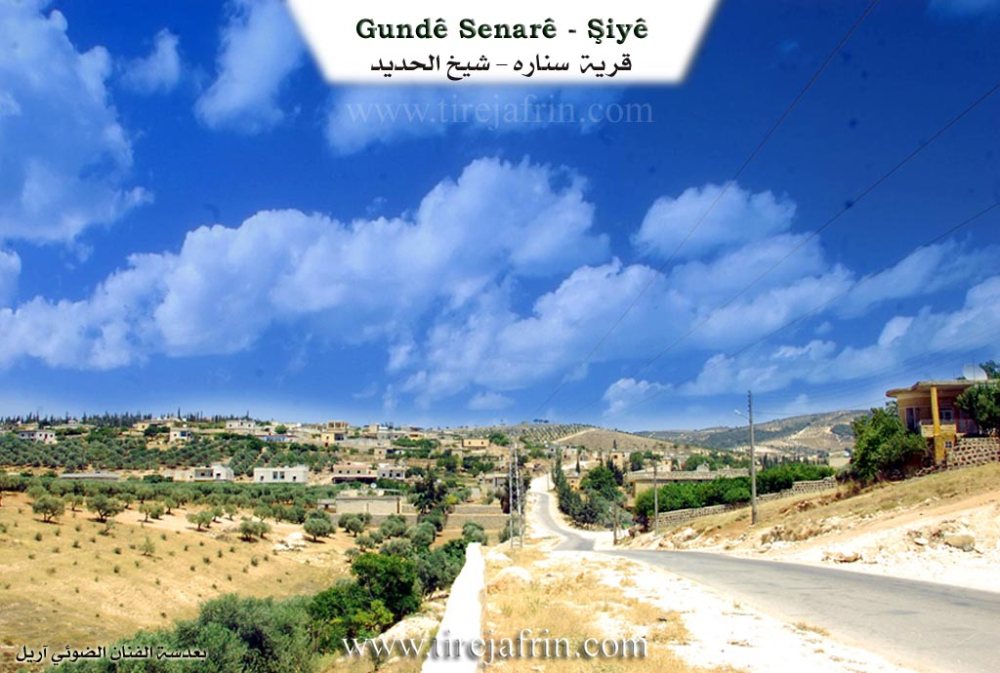
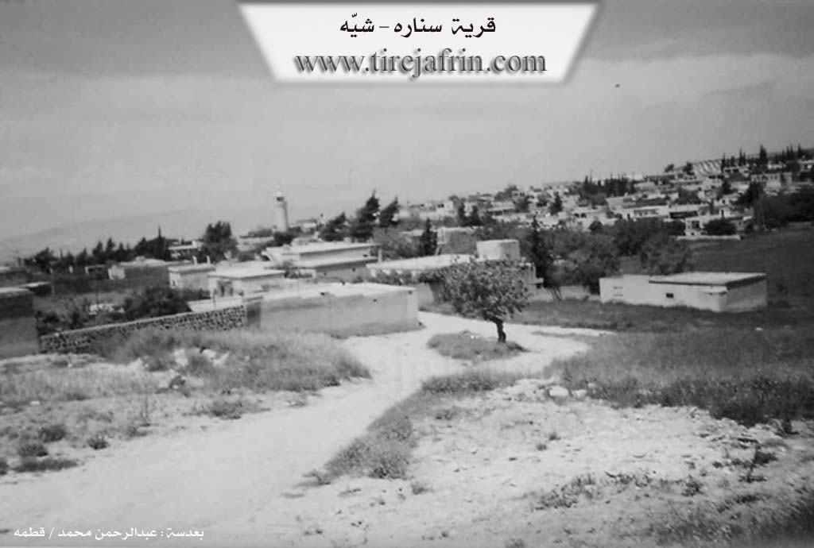

General Information
Nahiya (Subdistrict)
Şiyê
Also Known As
Anqalê, Senarê, سناره
Families, Clans, etc.
Bekir Axa, Dirşoy Kam, Elî Remedên, Gundî Hisê, Ibrahîm Şêx Silêman, Mala Eliyê axa, Mala Elîkê, Mala Mehmkê, Mala Mistehciyê, Mala Se'dûn, Mala Xelû, Mala me, Mala Îmir, Malê Ehmed Axa, Malê Hemxêrê, Malê Reşîd, Malê Tilyatê, Malê Xwêcelêra

Photos


Basic Information about Senarê
Source: Ax û Welat (Information for Anqelê and Senarê)
Etymology: Senarê is named after a village in Bakurê Kurdistan; Anqelê may mean Kela Dayikê (Mother's Castle) or derive from the Turkish On Kale (Ten Castles)
Foundation Date/Period: Senarê was founded 500 years ago; Anqelê was founded 400 years ago
Caves: Şikefta Tilê Cirnasê
Number of Caves: 300
Springs: Kaniya Senarê, Kaniya mezin, Kaniya Baziyê
Hills: Til Carnas, Tilê Cirnasê, Çiyayê Cirnasê
Shrines: Qiracê Rehve
Ruins: Xirabê 'Etarê, Qereş, Qesra Padîşah
Wells: Bîra Romanî, Gola Hovo
Other Landmarks: Geliyê Curcum, Curcumê mezin, Curcumê çûçik
Summaries
I. Summary from TirejAfrin Site (English) of Senarê
Source: https://www.tirejafrin.com/site/kura%20afrin%20shiye%20-%20senare.htm
The following is stated in the book جبل الكرد (عفرين) دراسة جغرافية Çiyayê Kurmênc (Efrîn): A Geographical Study by د. محمد عبدو علي Dr. Mihemed Ebdo Elî regarding Senar or Senare /2703 inhabitants, 1280 hectares, 5km distance, 380m elevation/
Senare in Latin signifies "Sanatorium" or "The Clinic". However members of the Dirşoy Kam family who were the first inhabitants of the village say that they settled in its location in the early 18th century arriving from the Mêrdîn region in northern Kurdistan. The name of their old village was Senare so they named this one after it.
It is a large village situated on a rocky plateau that slopes down toward the west where the Emq plain lies. To its west in the plain there is a volcanic hill called Tel Cernaz which rises 35m above the surrounding area. On its eastern slope there are tombs and shapes carved into the rock. Currently Enqelê and Senare form a single large village containing a municipal council a health center and a thriving economic life.
The following is stated in the book عفرين .... نهرها وروابيها الخضراء Efrîn... Her River and Her Green Hills by the writer عبدالرحمن محمد Ebdulrehman Mihemed from the village of Qetme regarding Senare
It is a village in Çiyayê Kurmênc following the Şiyê district in the Efrîn region of Heleb governorate. It is a large village located on a mountainous elevation of the western slope of the mentioned mountain atop limestone soil suitable for agriculture. It is 3km away from the district center.
It is bordered to the north by a plain planted with olive trees and the town of Şiyê. It is bordered to the south at a distance of 500 meters by the village of Enqelê. It is bordered to the east by a mountainous height the Geliyê Cercem and the villages of Bazyenlî and Hac Hesenlî. It is bordered to the west by a fertile plain planted with olive trees and fruit trees and the Lîwa Îskenderûn.
The number of its houses is approximately 250 houses and its age is about 500 years. Its old houses are made of stone and mud with wooden roofs while the modern ones are cement and stone spread toward the west and north. An electricity network is available as well as drinking water from the well of the town of Şiyê via modern canals. A municipality building a health dispensary an agricultural center and joint schools between the villages of Senare and Enqelê have been established in it.
Its lands are mountainous to the east and plain like to the west due to its proximity to the Emq plain and its soil is white. The residents work in the cultivation of rain fed olives and grains and irrigated agriculture of fruit trees such as pomegranate apricot lemon and walnut. It is connected to the district by an asphalt road that passes through its center. Among its most important families are the family of Bekir Axa and the family of Ibrahîm Şêx Silêman son of Şêx Şewqet who is considered one of the early old teachers in the Efrîn region.
Village Mukhtar Silêman Hacî Kûşkar
Preparation and execution
Manager of Tirej Efrîn site عبدالرحمن حاجي عثمان Ebdulrehman Hacî Osman
Sources
Book: جبل الكرد (عفرين) دراسة جغرافية Çiyayê Kurmênc (Efrîn): A Geographical Study by د. محمد عبدو علي Dr. Mihemed Ebdo Elî.
Book: عفرين .... نهرها وروابيها الخضراء Efrîn... Her River and Her Green Hills by عبدالرحمن محمد Ebdulrehman Mihemed from the village of Qetme.
20/12/2013
II. Summary of Anqelê and Senarê from Ax û Welat
Source: https://www.youtube.com/watch?v=42pma_QaQeg
The villages of Senarê and Anqelê, located in the Şiyê region, share a deep historical and social bond, having originated from a common settlement process. Senarê was founded approximately 500 years ago, while Anqelê followed about a century later. The history of Senarê begins with Mistê Hecî, who migrated from a village also named Senarê in Bakurê Kurdistanê. He initially settled at a location known as Xirabê 'Etarê, where the Malê Hemxêrê and Malê Xwêcelêra families were present. Eventually, the community established the current village of Senarê. The name Anqelê has contested origins. Elders suggest it may mean Kela Dayikê (Mother's Castle) or relate to a Turkish description On Kale (Ten Castles), referring to the many fortifications that once existed there.
Before these current villages existed, the area was dominated by an ancient settlement at Til Carnas, a hill that holds significant archaeological value. Elders describe Til Carnas as a place of legends, mentioning a Padîşah named Cirnas who had a palace, Qesra Padîşah, atop the hill. The site is said to contain 300 wells, cisterns, and caves, though many are now covered. The area around Til Carnas and the nearby Qiracê Rehve served as a necropolis with many tombs. The region historically had no hard borders; residents freely traded and arranged marriages in Kilis, Îskenderûn, Entakê, and Qirixxanê, with Heleb being virtually unknown to them until political boundaries shifted.
The social structure is defined by several prominent families. The Mala Mistehciyê (descendants of Mistê Hecî) are central to the history of Senarê. Other notable lineages across the two villages include Malê Xwêcelêra, Malê Reşîd, Mala Elîkê, Mala Îmir, Mala Se'dûn, Mala Eliyê axa, and Mala Mehmkê. The Mala Xelû family is specifically renowned for their olive cultivation, producing the distinct Zeytûnê Xelû variety.
Water has always been a critical resource for these communities. The Geliyê Curcum valley contains the vital Kaniya Senarê (also called Kaniya mezin) and Kaniya Baziyê. Historically, seven mills operated along this water source. When the springs would dry up, the villagers relied on an ancient Bîra Romanî (Roman Well) located about two kilometers away. The documentary also highlights local craftsmanship, featuring a carpenter named Omer who crafts the Tenbûr instrument from mulberry, apricot, and almond wood, inspired by musicians like Mihemedê Elî Tijo and Cemîl Horo.
II. Summary of Senarê from Khalil Sino
Source: https://www.youtube.com/watch?v=fxsh7NAZ2Ec
The documentary episode broadcast by the Hatim Life channel provides a glimpse into Gundê Xelîla and the surrounding communities in the Efrîn region. The program highlights the profound connection the local Kurdish people have with their natural environment. A central focus of the episode is the miraculous resurgence of natural water sources following a recent earthquake. The host explains that several springs that had been completely dry for years have suddenly begun to flow again, bringing renewed vitality to the landscape.
The journey begins near Gundê Şiyê, where the host observes multiple revived water sources. Among the most notable landmarks mentioned are Kaniya Berbenê and Kaniya Mezin. The host specifically points out that Kaniya Mezin is widely regarded as the largest spring in the area. Additionally, water has returned to Sêrûnê and to a sacred local site situated near the village of Ba Dîna. The spring at this shrine had been dry for six or seven years, making its sudden return a source of joy and spiritual comfort for the residents.
In a conversation with a local elder, the host inquires about the history of Gundê Xelîla. The elder explains that while the broader history of the area spans much further back, the specific houses in the current village were built around 1948 or 1949. He also clarifies the etymology of the village, noting that it was named after the people who settled there, thus embedding their ancestral identity directly into the land.
As the episode progresses, the host travels to Gundê Senarê, located close to Xozam. During this segment of the program, titled Niştiman, heartfelt greetings are extended to neighboring communities, including Sencaqa Xelîl and Çolaqa. This continuous mapping of local names showcases the deep geographical and social interconnectedness of the region.
Throughout the documentary, evocative Kurdish music plays in the background. The songs serve as a poetic tribute to Efrîn, heavily featuring natural imagery such as flowing streams, springs, and olive trees. The lyrics speak to the enduring love the people have for their soil and their unyielding hope for a peaceful return. Much like the dry springs that have miraculously begun to flow once more, the music reflects a resilient community holding onto the promise of renewal and life in their ancestral homeland.
Transcriptions and Subtitles
| Source | Video | Subtitles | Transcript |
|---|---|---|---|
| Ax û Welat 1 | Watch Video | Not Available | View Transcript |
| Khalil Sino 1 | Watch Video | Download SRT | View Transcript |
Foundation/Origin Information of Senarê
The children of the Dêrşoyê Kamê family, who are the village's first inhabitants, settled in its location in the early 18th century, coming from the Mardin region in northern Kurdistan.
Source: TirejAfrin Site
Origins trace back to the decline of an older settlement known as Tilê Cernas. The village of Senarê was established by Mist Hecî, a migrant from Northern Kurdistan who settled at the ruins of Xirabê Etarê. About a century later, the village of Enqelê was founded nearby. The founding families of these villages include the clans of Hemxêrê, Xoce Elî Axa, Mist Hecî, Elîkê, Îmir, and Se'do.
Source: Ax û Walat Transcript
Possible Village Name Meaning of Senarê
"Senāreh" in Latin means "sanatorium." The name of their old village in the Mardin region was "Senāreh", so it was named after it.
Source: TirejAfrin Site
Mist Hecî named the new settlement after his ancestral home.
Source: Ax û Walat Transcript